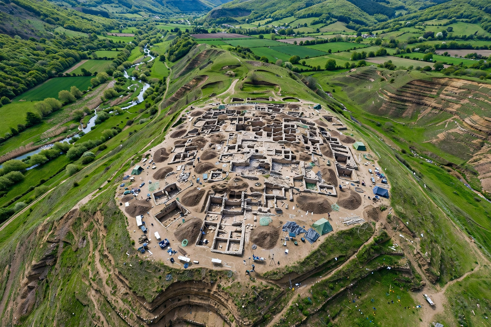

| Location | Northern Israel, Jezreel Valley |
|---|---|
| Type | Ancient city (tell) |
| Occupied | c. 7000 BCE – 586 BCE (and later remains) |
| Status | UNESCO World Heritage Site (2005) |
Megiddo (Hebrew: מְגִדּוֹ) is the site of the ancient city of Megiddo, whose remains form a tell (an archaeological mound) in northern Israel, situated near the modern kibbutz of Megiddo and south of the Jezreel Valley. The site commands the western entrance to the Jezreel Valley along the ancient Via Maris trade route linking Egypt with Mesopotamia, which made it one of the most contested strategic points of the ancient Near East.

Megiddo was inhabited from roughly 7000 BCE to 586 BCE, accumulating some 26 layers of ruins. The Battle of Megiddo in the 15th century BCE, in which Pharaoh Thutmose III defeated a Canaanite coalition, is the first battle in history recorded in detail, described in inscriptions at Karnak. Another Battle of Megiddo in 609 BCE saw Pharaoh Necho II defeat Judah and kill King Josiah. The city is traditionally associated with Solomon's fortifications and stables, whose dating is debated by archaeologists. In the New Testament's Book of Revelation, "Armageddon" — derived from Har Megiddo, "Mount of Megiddo" — is the prophesied site of the final battle between good and evil.
The site was excavated by the Oriental Institute of the University of Chicago (1925–1939), and later by Yigael Yadin and by Tel Aviv University teams. Major finds include a large Early Bronze Age temple complex, city gates, palaces, an elaborate water system with a shaft and tunnel to a spring outside the walls, and stables attributed to the Iron Age. In 2005 Megiddo was designated a UNESCO World Heritage Site as part of the "Biblical Tels — Megiddo, Hazor, Beer Sheba" listing.